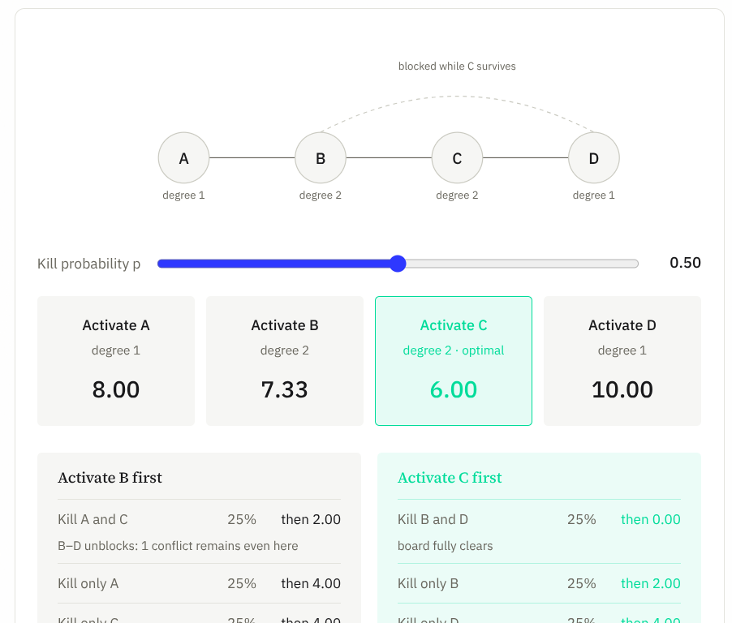
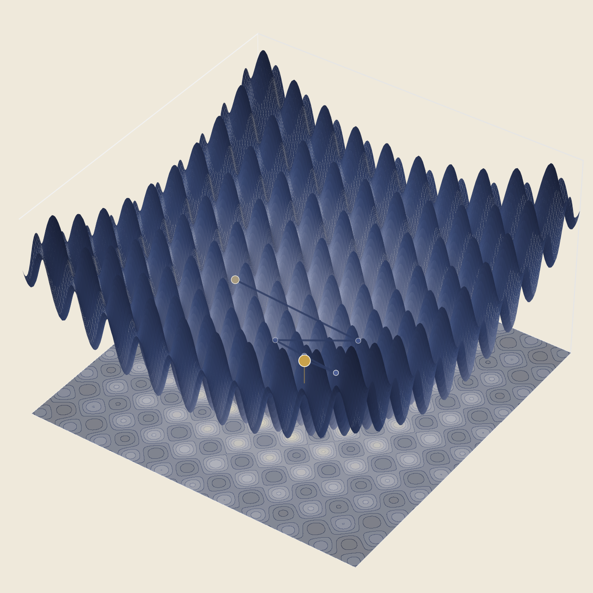

OR Visualizations
Algorithms you can see.
Ideas, methods, algorithms, and things I'm working through.
A stochastic, elimination-based variant of the n-queens problem: an MDP formulation, a provably suboptimal greedy baseline, a closed-form heuristic (ACG) with a worst-case approximation guarantee, and an exact MIP for the deterministic case.

An interactive counterexample to greedy-degreeTwo queens tie for the highest degree on a four-queen board and activating one of them is exactly optimal.
Read Simulated Annealing
Simulated Annealing
A hand-designed energy surface with six wells, and a search that accepts a worse outcome on purpose because it's still hot enough to afford to.
Read Ant Colony Optimization
Ant Colony Optimization
A from-scratch Elitist Ant System on a 17-city TSP instance small enough to solve exactly, so every convergence claim is checked against a provable answer.
Read
Genetic Algorithm EvolutionA real-valued genetic algorithm searches the Rastrigin function, making the exploration/exploitation tradeoff something you watch happen.
ReadAlgorithms you can see.
Markov Decision Processes, from seminar to subtlety.
Stochastic Queens Elimination, from the paper to the policy simulator.
Don't just read about Random-admissible, Greedy-degree, and Adaptive Coverage Greedy — step through them yourself on the same n=8 board as the main post, and watch the cumulative conflict cost race against the exact optimal value.
Launch companionNo notes match that search — try a different term or .